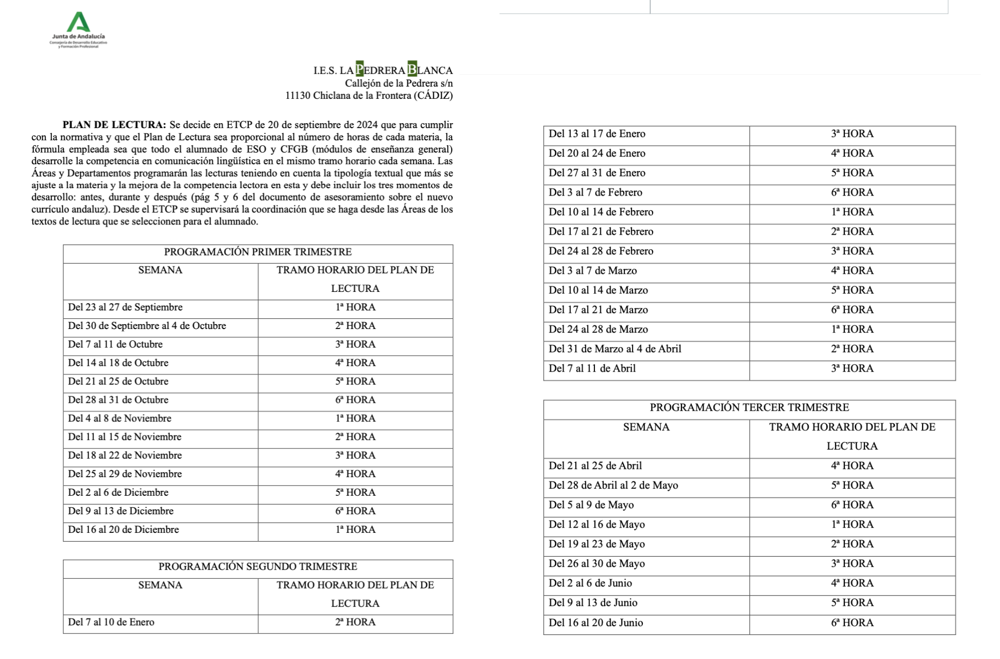

El Plan de Lectura que se incluye ofrece la planificación del mismo para todo el curso escolar (en el mismo documento se explica cómo se debe realizar). Cada departamento es autónomo en su aplicación aunque la coordinación por niveles y el banco de lecturas son fundamentales.
